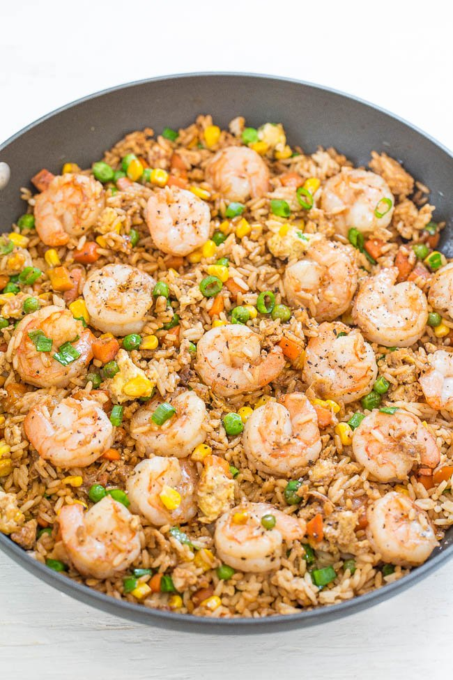

Shrimp Fried Rice

Description:
One-skillet, ready in 20 minutes, and you’ll never get takeout again!! Homemade tastes WAY BETTER!! Tons more flavor, not greasy, and loaded with tender shrimp!!
Ingredients:
- 2 tablespoons sesame oil
- 2 tablespoons canola or vegetable oil
- 1 pound medium-large fresh shrimp, cleaned (approximately 15-20 count shrimp)
- 1 cup frozen peas and diced carrots blend (I don’t thaw and use straight from the freezer)
- 1/2 cup corn (I use frozen straight from the freezer)
- 2 to 3 garlic cloves, finely minced or pressed
- 1/2 teaspoon ground ginger
- 3 large eggs, lightly beaten
- 4 cups cooked rice (I use white, long-grain or brown may be substituted. To save time use two 8.8-ounce pouches cooked and ready-to-serve rice)
- 2 to 3 green onions, trimmed and sliced into thin rounds
- 3 to 4 tablespoons low-sodium soy sauce
- 1/2 teaspoon salt, or to taste
- 1/2 teaspoon freshly ground black pepper, or to taste
Steps:
- To a large non-stick skillet or wok, add the oils, shrimp, and cook over medium-high heat for about 3 minutes, flipping halfway through. Cooking time will vary based on size of shrimp, don’t overcook. Remove shrimp with a slotted spoon (allow oils and cooking juices to remain in skillet) and place shrimp on a plate; set aside.
- Add the peas, carrots, corn, and cook for about 2 minutes, or until vegetables begin to soften, stir intermittently.
- Add the garlic, ginger, and cook for 1 minute, stir intermittently.
- Push vegetables to one side of the skillet, add the eggs to the other side, and cook to scramble, stirring as necessary.
- Add the shrimp, rice, green onions, evenly drizzle with soy sauce, evenly season with salt and pepper, and stir to combine. Cook for about 2 minutes, or until shrimp is reheated through. Recipe is best warm and fresh but will keep airtight in the fridge for up to 5 days or in the freezer for up to 4 months. Reheat gently as desired.
Return To Home Page